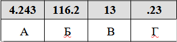

Задание 7. Знать принципы адресации в сети Интернет
1. Доступ к файлу math.doc, находящемуся на сервере obr.ru, осуществляется по протоколу https. Фрагменты адреса файла закодированы цифрами от 1 до 7.
1. obr
2. /
3. .ru
4. .doc
5. ://
6. math
7. https
Запишите последовательность этих цифр, кодирующую адрес указанного файла в сети Интернет.Ответ 7513264.
2. Файл may.jpeg был выложен в интернете по адресу http://spring.info/may.jpeg. Потом на этом сайте создали подкаталог months и файл переместили в этот подкаталог.
Укажите новый адрес указанного файла.Ответ http://spring.info/months/may.jpeg.
3. Доступ к файлу net.txt, находящемуся на сервере doc.com, осуществляется по протоколу ftp.
В таблице фрагменты адреса файла закодированы буквами от А до Ж. Запишите последовательность этих букв, кодирующую адрес указанного файла в сети Интернет.А) /
Б) .com
В) ftp
Г) .txt
Д) doc
Е) net
Ж) ://
Решение.
Напомним, как формируется адрес в сети Интернет. Сначала указывается протокол (как правило это «ftp» или «http»), потом «://», потом сервер, затем «/», название файла указывается в конце.Таким образом, адрес будет следующим: ftp://doc.com/net.txt.
Ответ ВЖДБАЕГ.4. На месте преступления были обнаружены четыре обрывка бумаги.
Следствие установило, что на них записаны фрагменты одного IP-адреса. Криминалисты обозначили эти фрагменты буквами А, Б, В и Г:
Восстановите IP-адрес. В ответе укажите последовательность букв, обозначающих фрагменты, в порядке, соответствующем IP-адресу.Решение.
IP-адрес представляет собой четыре разделённых точками числа, каждое из которых не больше 255.Под буквой А указано «4.243». Так как числа в IP-адресе не могут быть больше 255, нельзя добавить в конце этого числа еще один разряд. Следовательно, этот фрагмент — последний.
Рассмотрим фрагмент под буквой Б. Так как числа в IP-адресе не могут быть больше 255, фрагмент Б должен быть на первом месте. В конце фрагмента Г — число 23, отделенное точкой. Так как в IP-адресе не может быть числа, большего 255, то за фрагментом Г должен следовать фрагмент, начинающийся с цифры. Значит, фрагмент Г идет перед фрагментом А.Ответ БВГА.
5. Файл pig.pdf был выложен в Интернете по адресу http://mypigs.ru/pig.pdf. Потом его переместили в каталог work на сайте presentation.edu, доступ к которому осуществляется по протоколу ftp. Имя файла не изменилось.
Фрагменты нового и старого адресов файла закодированы цифрами от 1 до 9. Запишите последовательность этих цифр, кодирующую адрес файла в сети Интернет после перемещения.
1) http:/
2) pig
3) work
4) presentation
5) .edu
6) ftp:/
7) /
8).pdf
9) mypigs
Решение.
Напомним, как формируется адрес в сети Интернет. Сначала указывается протокол (как правило это «ftp» или «http»), потом «://», потом сервер, затем «/», далее каталог, после «/», название файла указывается в конце.Таким образом, новый адрес расположения файла будет следующим: ftp://presentation.edu/work/pig.pdf.
Ответ: 674573728.